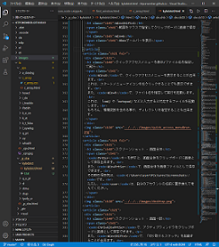

PC基礎講習/ショートカットキー
概要
今回の講習では、文字列の編集方法や、特殊なキーの使い方を学びます。
重要語
キャレット
文字の挿入位置の標識
Ctrlキー
ショートカットを操作するためのキー
Altキー
メニューやショートカットを操作するためのキー
Shiftキー
大文字を入力するためのキー
Windowsキー
Windowsを便利に操作するためのキー
PrintScreenキー
スクリーンショットを取るためのキー
Tabキー
Tab文字を入力するなどのためのキー
メディアコントロールキー
音量や画面名の明るさなどを制御するキー
ファンクションキー
キーボードの一番上にあるF1からのキー
ショートカットキー
特定の動作をするキーの組み合わせ
仮想デスクトップ
デスクトップを仮想的に複数用意する機能
必要語
ASCII
英数文字などの符号化方式の1つ
キャレット
キャレットとは、文字列の編集中に、文字を挿入する位置を示す標識のことです。
テキストカーソル、あるいは単にカーソルと呼ばれることも多いようです。
この講習では、マウスカーソルとの混同を避けるためキャレットと呼びます。
キャレットの移動
まず、アクセサリのメモ帳を起動し、10文字ほどASCII文字を入力してみましょう。
点滅する縦棒が点滅しながら動いているのがわかると思います。この縦棒がキャレットです。
これは、キーボード右下の矢印キーか、マウスでクリックすることによって移動できます。
文字を入力した時、キャレットの位置に挿入されていることを確認しましょう。
文字の削除
back spaceキーを押して、キャレットの前にある文字を消せます。
deleteキーなら、キャレットの後ろの文字を消せます。
文字列選択
Shiftキーを押しながら、キャレットを動かしてみましょう。
動かす前の位置から今の位置まで、背景が青く変わったのがわかると思います。
このとき、背景が青い部分を、選択されている文字列、といいます。
アルファベット以外のキー
アルファベット以外のキーでも頻繁に使うキーが幾つかあります。
ShiftキーとCaps Lockキーは前回説明したので、その他のキーを説明します。
主なその他キー
Ctrlキー
読み方はコントロールキーです。Shiftキー同様、左右にあり、どちらを使っても構いません。
このキーを使うと、文字は入力されませんが、動作の指示をすることができます。
Altキー
キーボードの一番下にあり、ノートPCだと右側が省略されることが多いキーです。
このキーを使うと、ウィンドウの上にあるメニューが選択されます。
Windowsキー
キーボード左下に1つだけあるキーです。Winキーと省略して呼ぶことがあります。
既に紹介していますが、このキーを使うと、スタートメニューが表示されます。
PrintScreenキー
キーボードの右上にあるキーです。ノートPCではPrtScrと表記してあることが多いです。
このキーは、後述のようにスクリーンショットを取るのに使います。
Tabキー
Tabキーは、Caps Lockキーの上にあるキーです。これはTab文字を入力するのに使います。
ファンクションキー
キーボードのF1からF12、ノートPCならFnのキーも含めてファンクションキーと言います。
F1からF12は、ソフトウェアごとに様々なショートカットキーに割り当てられています。
メディアコントロールキー
メディアコントロールキーは、音量や画面の明るさなどを制御するキーのことです。
ノートPCのほとんどの場合、ファンクションキーとメディアコントロールキーは兼用です。
その場合、Esc+Fnを押すことで、ファンクション/メディアを切り替える事が出来ます。
ただし、Fnと同時に押すと一時的に切り替えをしているのと同じ効果が得られます。
ショートカットキー - アプリ編
ショートカットキーとは、押すと特定の動作をするキーの組み合わせです。
ほとんどの場合、マウスの右クリックなどから入力できます。
しかし、キーボードで打つ方が素早く入力できるようになるので、習得するといいでしょう。
ここでは、ほとんどのアプリに実装されているショートカットキーを紹介します。
紹介するショートカットキーの一覧と説明
Ctrl+A
全選択
Ctrl+F
検索
Win+. 又は Win+:
顔文字パレットの表示
Ctrl+Z
取り消し
Ctrl+Y
やり直し
Ctrl+C
複製/コピー
Ctrl+X
切り取り/カット
Ctrl+V
貼り付け/ペースト
Win+V
クリップボードの履歴を表示
Ctrl+S
保存
取り消し/やり直し
Ctrl+Zで操作を取り消し、Ctrl+Yで取り消しを取り消す、やり直しを入力できます。
イメージとしては、操作は時系列順に並んでいて、Ctrl+Zは最も新しい処理を取り消します。
逆に、Ctrl+Yを押すと取り消された操作のうち、最も新しいCtrl+Zを操作直します。
ただし、取り消せる上限があるアプリケーションもあるので、必ずしもこの様ではありません。
メモ帳ではスペースや改行、キャレットの移動までが1つの処理で、1回のみ取り消せます。
クリップボード
クリップボードは、文字列や画像などのデータを一時的に保存できる機能です。
Ctrl+Cでクリップボードにコピー、Ctrl+Vでクリップボードからペースト出来ます。
また、Ctrl+Xではクリップボードにコピーした後、コピー元のデータを削除します。
Ctrl+Cを複製やコピー、Ctrl+Vを貼り付けやペースト、Ctrl+Xを切り取りやカットと言います。
文字列では、文字列を選択肢してCtrl+Cを押すと、クリップボードにコピーします。
そして、キャレットを移動させCtrl+Vを押すと、クリップボードからペーストされます。
文字列を選択肢してCtrl+Xを押すと、クリップボードにコピーされた後に消去されます。
クリップボードの履歴
Windows 10では、クリップボードを複数保存する「クリップボードの履歴」があります。
「設定 > システム > クリップボード > クリップボードの履歴」から有効化出来ます。
有効化しておくと、Win+Vでクリップボードの履歴が開かれます。
その中から貼り付けしたいデータを選択し、貼り付けることが出来ます。
保存
保存のショートカットキーはCtrl+Sです。編集したデータを保存することができます。
保存用の画面が出てくるので、フォルダを選択し、ファイル名を適当につけ、保存します。
ショートカットキー - ウィンドウ/アプリケーション編
ここから、Windowsの機能として実装されているショートカットキーを紹介します。
ここでは、ウィンドウやアプリに関するショートカットキーを紹介します。
紹介するショートカットキーの一覧と説明
Win+E
「エクスプローラー」を起動
Win+I
「設定」を起動
Win+数字
タスクバーの左から数字番目を起動
Win+X
クイックアクセスメニューを表示
Win+R
ファイル名を指定して実行を起動
Win+Left/Win+Right
ウィンドウを左/右寄せする
Win+Up/Win+Down
ウィンドウを最大/最小化する
Alt+Tab
アプリ切り替え画面へ遷移
Win+Tab
現在の仮想デスクトップのウィンドウ一覧を表示
Ctrl+Win+Left/Ctrl+Win+Right
仮想デスクトップの切り替え
クイックアクセスメニューを表示/ファイル名を指定して実行
Win+Xで、クイックアクセスメニューを表示することが出来ます。
これは、スタートメニューアイコンを右クリックすることでも表示できます。
また、Win+Rで、ファイル名を指定して実行を起動します。
これは、「cmd」や「notepad」などと入力すると対応するファイルを起動します。
もちろん、環境変数を含める事や、ディレクトリを指定することも出来ます。
ウィンドウの左/右寄せ
Win+Left/Win+Rightは、フリーなウィンドウを画面に対して左/右寄せします。
また、左/右寄せされているウィンドウに対しては、右/左寄せにします。
更に、右/左寄せされているウィンドウに対しては、フリーな状態に戻します。
難しく書きましたが、Win+Left/Win+Rightを3回で一周するようになっています。
なお、LeftとRightは矢印キーを指す事に注意してください。
ウィンドウの最大/最小化
Win+Up/Win+Downは、フリーなウィンドウを最大/最小化します。
また、最小/最大化されているウィンドウに対しては、フリーな状態に戻します。
ここまでまとめると、最大化/フリー/最小化を行ったり来たり出来る、ということです。
また、左/右寄せされているウィンドウに対しては、左上|左下/右上|右下寄せにします。
更に、左下|右下/左上|右上寄せされているウィンドウに対しては、左|右/左|右寄せにします。
更に、左上|右上/左下|右下寄せされているウィンドウに対しては、最大/最小化します。
ここまでまとめると、左/右寄せのウィンドウは左上/右上を経由して最大化へ、
左/右寄せのウィンドウは左下/右下を経由して最小化へと遷移する、ということです。
なおこちらも前項と同様に、UpとDownは矢印キーを指すことに注意してください。
ウィンドウ切り替え
Alt+Tabで、ウィンドウを切り替える画面へと遷移します。
Altキーを押している間、表示されているウィンドウの一覧が表示されます。
そこでTabキーを押すたびに、アクティブウィンドウから選択が変わって行きます。
そして、Altキーを離した時に選択されているウィンドウがアクティブになります。
仮想デスクトップ
Windows 10は仮想デスクトップというデスクトップを仮想的に複数用意する機能があります。
Win+Tabで、現在の仮想デスクトップのウィンドウ一覧を表示させることができます。
また、Ctrl+Win+left/Ctrl+Win+rightで、隣接する左/右の仮想デスクトップへ移動します。
ショートカットキー - グラフィック編
ここではスクリーンショットと動画キャプチャーについてのショートカットキーを紹介します。
紹介するショートカットキーの一覧と説明
PrtScr
画面全体をクリップボードに画像で保存
Win+PrtScr
画面全体を画像ファイルとして保存
Ctrl+Alt+PrtScr
アクティブウィンドウをクリップボードに画像で保存
Win+Shift+S
範囲をマウスで指定してクリップボードに画像で保存
Win+G
Xboxゲームバーを表示
スクリーンショット - 画面全体
PrtScrキーを押すと、画面全体をクリップボードに画像として保存出来ます。
また、Win+PrtScrで、画面全体を画像ファイルとして保存できます。
その時の保存先は、C:\Users\user\Pictures\Screenshotsです。
ただし、userは、自分のアカウントの名前に置き換えて考えてください。
スクリーンショット - 画面一部
Ctrl+Alt+PrtScrで、アクティブウィンドウをクリップボードに画像として保存できます。
また、Win+Shift+Sで、「切り取り＆スケッチ」を起動することが出来ます。
それが起動されると、マウスで切り取った範囲をクリップボードに画像として保存できます。

Xboxゲームバー
Win+Gで、Xboxゲームバーを表示させることが出来ます。
Xboxゲームバーでは、画面を動画で保存する、画面キャプチャーを起動できます。
また、音量の調整やPCパフォーマンスのモニタリングも出来ます。
ショートカットキー - 緊急編
ウィンドウやアプリケーションが動かなくなった時に役立つショートカットキーを紹介します。
紹介するショートカットキーの一覧と説明
Alt+F4
アプリケーションを終了する
Ctrl+Shift+Esc
タスクマネージャーを起動
Ctrl+Alt+Delete
セキュリティオプションを起動
電源ボタン
長押しで強制終了
アプリケーション終了/Windowsシャットダウン
Alt+F4は、ウィンドウに対して行うと、アプリケーションを終了させます。
またデスクトップで行うと、「Windowsのシャットダウン」が表示されます。
アプリケーションが停止した場合や、GUIで消去できない場合に使ってください。
タスクマネージャー
Alt+F4で終了できないアプリケーションは、タスクマネージャーで強制終了が鉄則です。
Ctrl+Shift+Escでタスクマネージャーを起動することが出来ます。
セキュリティオプションを起動
PCが荒れ狂っている時には、セキュリティオプションを起動して対処できます。
Ctrl+Alt+Deleteで、セキュリティオプションを起動することが出来ます。
このショートカットキーは、Windowsのみしか認識できず、安全です。
なお、セキュリティオプションはスクリーンショットが取れないので、画像はありません。
電源ボタン
すこし番外編になりますが、PCが動かない場合には電源ボタンで物理的に止めましょう。
多くのPCは、数秒から十数秒ほど電源ボタンを長押しすると、物理的に電源が落ちます。